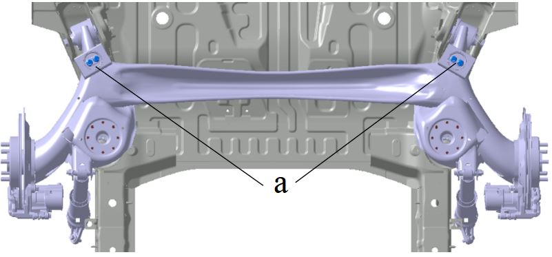
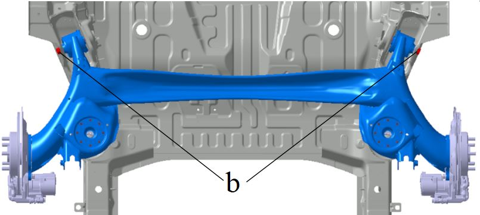

Снятие
Выполнить Подъем автомобиля.
Снятие колеса.
Ссылка: Колеса и шины
Выполнить Снятие Задняя винтовая пружина.
Ссылка: Задняя винтовая пружина
Снять задний амортизатор.
Ссылка: Задний амортизатор в сборе
Выполнить Снятие узла динамического гасителя колебаний: с балки заднего моста в сборе выкрутить болт a, снять по 1 узлу динамического гасителя колебаний с левой и правой сторон.
Крутящий момент: (75 ± 7.5) N.m

С помощью плоского домкрата (или другого подъемного оборудования для Установка на опоры) подпереть Балка заднего моста в сборе, выкрутить болт b крепления втулки заднего моста к кузову, плавно опустить Балка заднего моста в сборе.
Крутящий момент: (200 ± 20) N.m

Выполнить Снятие Передний тормозной суппорт.
Ссылка: Передний тормозной суппорт
Установка
Порядок Установка обратен порядку Снятие, моменты затяжки соответствуют Требования к сборке.
Регулировка углов установки колес.
Ссылка: Проверка параметров регулировки углов установки задних колес